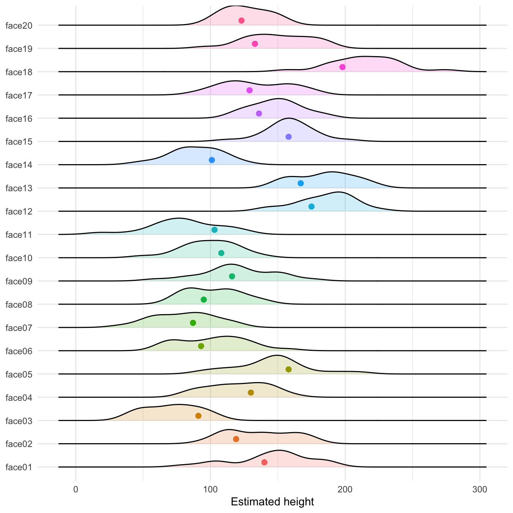
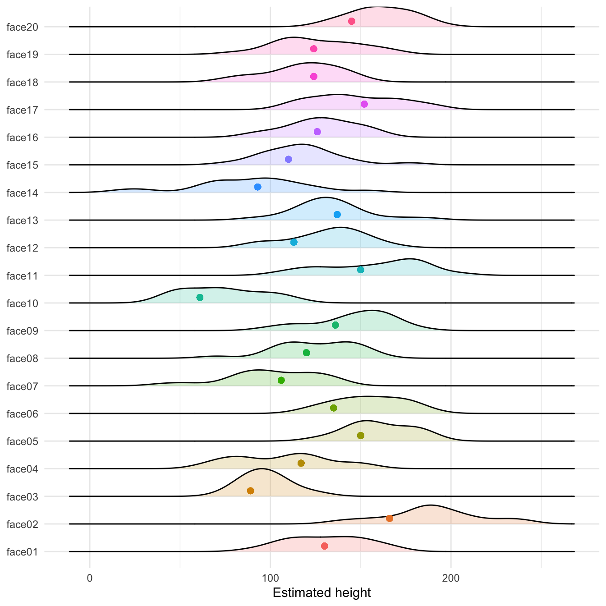
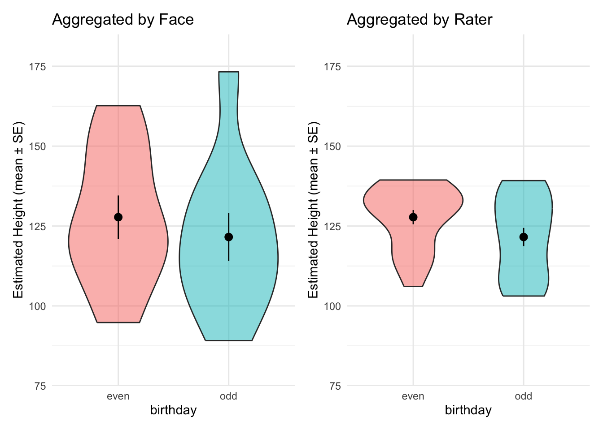
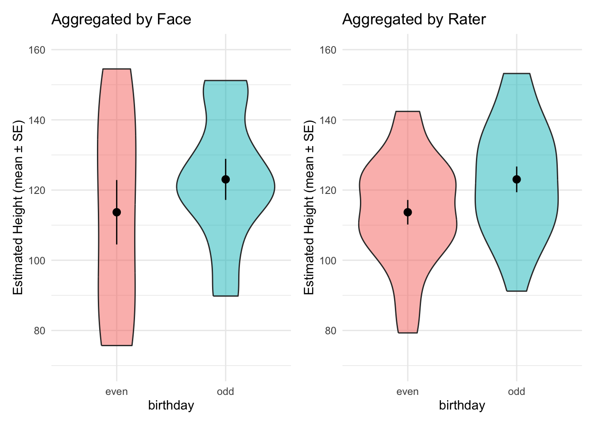
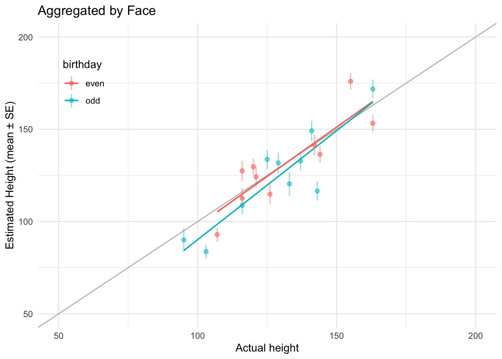
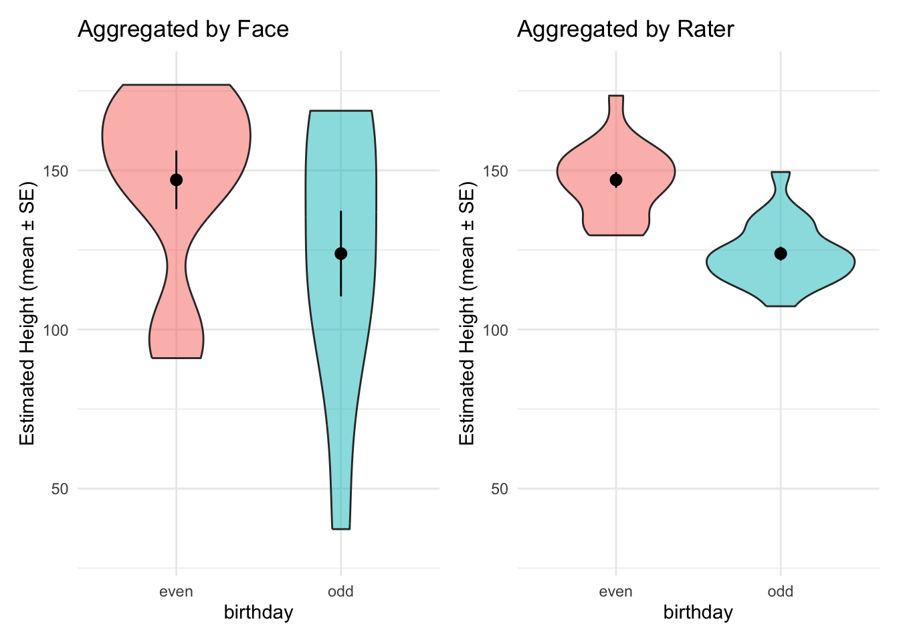
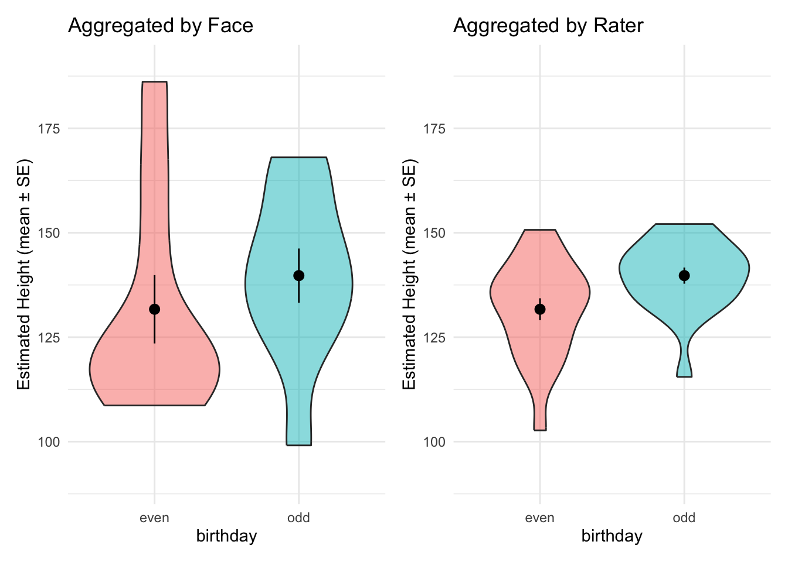
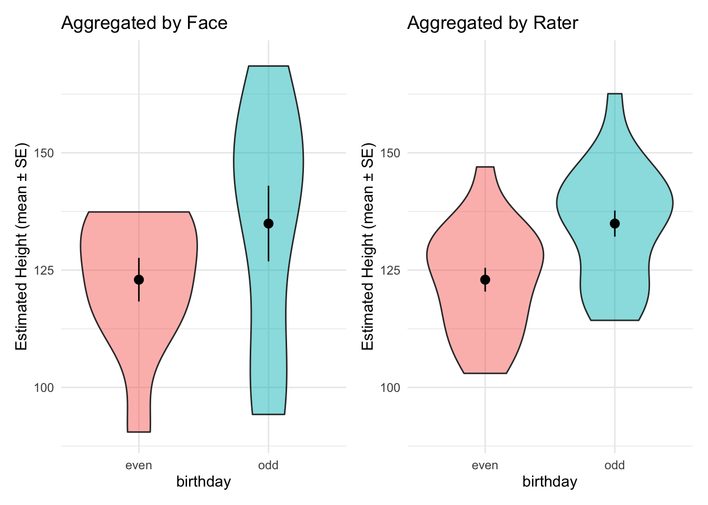

library(faux) # for multilevel data simulation
library(dplyr) # for data manipulation
library(ggplot2) # for plotting
library(ggridges) # for ridge plots
library(patchwork) # for combining plots
library(purrr) # for iteration
library(broom) # for tabular model output
set.seed(8675309) # to make simulation reproducible
theme_set(theme_minimal())Testing
Using simulation to create unit tests for a code base or statistical method.
Example
Create data where you know the ground truth in order to, for example, check the false positive rate of a statistical test.
Simulate Data
Simulate data with a multilevel structure. Here, face_n faces are rated by rater_n raters for height. Some faces tend to look taller or shorter than they are (this face bias has a normal distribution with a mean of 0 and SD of face_b0_sd) and raters tend to over- or under-estimate (this rater bias has a normal distribution with a mean of 0 and SD of rater_b0_sd). People are pretty bad at estimating height from faces, so there’s a lot of error (represented by sigma). Faces have even or odd birth dates, but there is no actual effect of birthday (bday_effect = 0).
# this function returns a simulated dataset with the specified parameters
simdat <- function(face_n = 20,
rater_n = 20,
face_b0_sd = 10,
rater_b0_sd = 10,
sigma = 20,
bday_effect = 0) {
heights <- rnorm(face_n, 130, 20) |> round()
data <- add_random(face = face_n) |>
mutate(height = heights) |>
add_between("face", birthday = c("even", "odd")) |>
add_contrast("birthday", colnames = "bday") |>
add_random(rater = rater_n) |>
add_ranef("rater", b0_r = rater_b0_sd) |>
add_ranef("face", b0_f = face_b0_sd) |>
add_ranef(err = sigma) |>
mutate(est_height = height + b0_r + b0_f + err +
(bday * bday_effect),
est_height = round(est_height)) |>
select(-b0_r, -b0_f, -err)
return(data)
}simdat() |> head()# A tibble: 6 × 6
face height birthday bday rater est_height
<chr> <dbl> <fct> <dbl> <chr> <dbl>
1 face01 110 even -0.5 rater01 155
2 face01 110 even -0.5 rater02 115
3 face01 110 even -0.5 rater03 96
4 face01 110 even -0.5 rater04 75
5 face01 110 even -0.5 rater05 97
6 face01 110 even -0.5 rater06 128ggplot(simdat(), aes(x = est_height, y = face, fill = face)) +
geom_density_ridges(alpha = 0.2, scale = 1) +
geom_point(aes(x = height, color = face), size = 2,
position = position_nudge(y = .2)) +
labs(x = "Estimated height", y = NULL) +
theme(legend.position = "none")Picking joint bandwidth of 10.2
Aggregate Data
# this function aggregates data by FACE
aggface <- function(data) {
data |>
group_by(face, height, birthday) |>
summarise(mean_est_height = mean(est_height),
sem = sqrt(var(est_height)/length(est_height)),
.groups = "drop")
}simdat() |> aggface() |> head()# A tibble: 6 × 5
face height birthday mean_est_height sem
<chr> <dbl> <fct> <dbl> <dbl>
1 face01 124 even 132. 6.13
2 face02 80 odd 78.2 4.67
3 face03 89 even 77.7 4.41
4 face04 138 odd 128. 4.49
5 face05 127 even 122. 4.58
6 face06 128 odd 123. 5.93# this function aggregates data by RATER
aggrater <- function(data) {
data |>
group_by(rater, birthday) |>
summarise(mean_est_height = mean(est_height),
sem = sqrt(var(est_height)/length(est_height)),
.groups = "drop")
}simdat() |> aggrater() |> head()# A tibble: 6 × 4
rater birthday mean_est_height sem
<chr> <fct> <dbl> <dbl>
1 rater01 even 137. 7.85
2 rater01 odd 133. 7.61
3 rater02 even 130. 8.94
4 rater02 odd 138. 13.7
5 rater03 even 150. 5.68
6 rater03 odd 159. 7.42Plot Data
simdat() |>
aggface() |>
ggplot(aes(x = height, y = mean_est_height, color = birthday)) +
geom_abline(slope = 1, intercept = 0, color = "grey") +
geom_smooth(aes(group = birthday),
method = lm, formula = y ~ x,
se = FALSE, linewidth = 0.7) +
geom_pointrange(aes(group = face,
ymin = mean_est_height - sem,
ymax = mean_est_height + sem),
size = 0.3, alpha = 0.5) +
coord_cartesian(xlim = c(50, 200), ylim = c(50, 200)) +
labs(title = "Aggregated by Face",
x = "Actual height",
y = "Estimated Height (mean ± SE)") +
theme(legend.position = c(.1, .8))
# this function plots the aggregated data
plotagg <- function(data, title = "") {
data |>
ggplot(aes(x = birthday, y = mean_est_height, fill = birthday)) +
geom_violin(alpha = 0.5) +
stat_summary(fun.data = mean_se) +
labs(title = title,
y = "Estimated Height (mean ± SE)") +
theme(legend.position = "none")
}plotboth <- function(data) {
f <- aggface(data)
fplot <- plotagg(f, "Aggregated by Face")
r <- aggrater(data)
rplot <- plotagg(r, "Aggregated by Rater")
# get plots on the same y-axis range
heights <- c(f$mean_est_height, r$mean_est_height)
minh <- (min(heights)/10) |> floor()*10
maxh <- (max(heights)/10) |> ceiling()*10
fplot + rplot & coord_cartesian(ylim = c(minh, maxh))
}simdat() |> plotboth()
More error variability
simdat(sigma = 50) |> plotboth()
More raters
simdat(rater_n = 200) |> plotboth()
More between-face variability
simdat(face_b0_sd = 30) |> plotboth()
Induce an effect of birthday, where people born on odd days are 10cm taller than those born on even days.
simdat(bday_effect = 10) |> plotboth()
Analyse Data
Run a t-test on the data.
ttest <- function(data) {
t.test(mean_est_height ~ birthday,
data = data,
paired = TRUE) |>
broom::tidy()
}Simulate data
d <- simdat()Aggregate by face and test
d |> aggface() |> ttest()# A tibble: 1 × 8
estimate statistic p.value parameter conf.low conf.high method alternative
<dbl> <dbl> <dbl> <dbl> <dbl> <dbl> <chr> <chr>
1 1.85 0.128 0.901 9 -31.0 34.7 Paired t-… two.sided Aggregate by rater and test
d |> aggrater() |> ttest()# A tibble: 1 × 8
estimate statistic p.value parameter conf.low conf.high method alternative
<dbl> <dbl> <dbl> <dbl> <dbl> <dbl> <chr> <chr>
1 1.86 0.898 0.381 19 -2.47 6.18 Paired t-… two.sided Repeat
If a test has a nominal false positive rate, the power (i.e., the percent of false positives when there is no effect) should be (about) the same as the alpha cutoff. This is because p-values are uniformly distributed when there is no effect.
# run a t.test on values from the same distribution
# 10000 time and plot the distribution of p-values
p <- replicate(10000, t.test(rnorm(10), rnorm(10))$p.value)
hist(p)
We’ll use the psychology default value of 0.05 for alpha here.
alpha <- 0.05Run your data simulation 100 times, aggregating by face, and calculate the false positive rate, which should be about the same as alpha.
simresults <- map_df(1:100, ~simdat() |> aggface() |> ttest())
mean(simresults$p.value < alpha)[1] 0.03Run 100 times aggregating by rater. The false positive rate is very high.
simresults <- map_df(1:100, ~simdat() |> aggrater() |> ttest())
mean(simresults$p.value < alpha)[1] 0.71What if there are more raters?
simresults200 <-map_df(1:100, ~simdat(rater_n = 200) |>
aggrater() |> ttest())
mean(simresults200$p.value < alpha)[1] 0.87